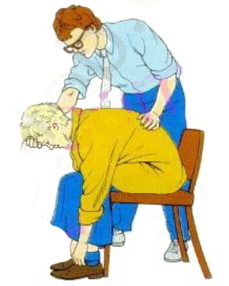
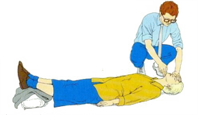
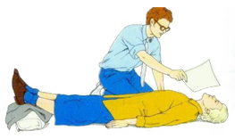
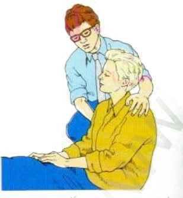

الاغماء
-
الاعراض والعلامات
- يكون النبض بطيئاً في المرحلة الاولى
قد يكون المصاب شاحباً جداً
الوقاية
- اذا كان المصاب في استعراض او ضمن تجمع من الناس انصحه بأن يثني عضلات الساق واصابع القدمين لمساعدة الدورات
- واذا شعر المصاب بأنه غير متماسك اجلسه ,وساعده على الانحناء الى الامام ووضع رأسه بين ركبتيه واطلب اله ان
يتنفس بعمق

تنبه*
- لا تعطِ المصاب اي شي عن طريق الفم حتى يعود اليه وعيه بالكامل ,ولا تعطيه اي مشروب كحولي
المعالجة
- عندما يغمى على المصاب,ارقده وارافع ساقيه وابق مسلك الهواء لديه مفتوحا

- فك اي ملابس مشدودة على الرقبة او الصدر او الخصر وذالك لمساعدة دروان الدم والتنفس

- تأكد من ان المصاب يحصل على الكثير من الهواء الطلق . ضعه في تيار من الهواء المنعش وهو امام وجهه وضعه في الظل
اذا لزم الامر
- طمئنه وهو يعود الى وعيه ,وارفعه بالتدريج حتى يصل الى وضع الجلوس

- تحقق من وجود اصابات لحقت به اثناء السقوط وعالجها
- اذا لم يبدأ المصاب في استعادة وعيه بسرعة ,افتح مسلك الهواء وتحقق من التنفس واعمل على انعاشه اذا وجدت لزوما
لذالك ,وضعه في وضع الافاقة ,واطلب العون الطبي بسرعة